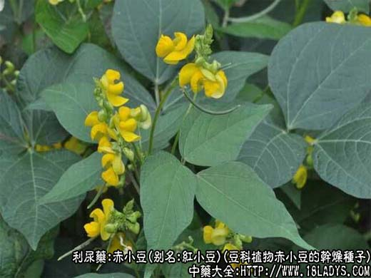
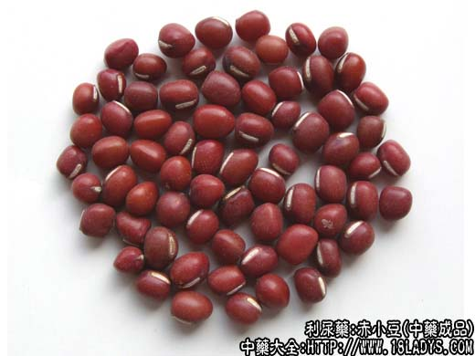
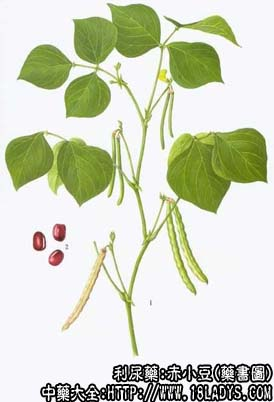

赤小豆为常用中药。《神农本草经》列为中品。
别名：赤豆，红小豆，朱砂豆。
来源：为豆科植物赤小豆的干燥种子。叶、花及发的芽亦供药用。野生与栽培均用。
产地：全国大部分地区均有生产。
性状鉴别：干燥的种子呈圆形而稍扁，长5～7毫米，直径约3毫米，种皮暗紫色，平滑，微有光泽，种脐线形，白色，约为全长的2/3，中间微凹陷成一纵沟，偏向一端，背面有一条不明显的棱脊。质坚硬，不易破碎，除去种皮，可见两瓣乳白色子仁。气微，嚼之有豆腥气并有粘性。以身干、体实、饱满、色紫红发暗者为佳。
主要成分：每百克含蛋白质20.7g，钙67g，脂肪0.5g，碳水化合物58g，粗纤维4.9g，灰分3.3g，磷3.5mg，铁5.2mg，其外还含硫胺素、核黄素、尼克酸等。
功效与作用：赤小豆对金黄色葡萄球菌、福氏痢疾杆菌及伤寒杆菌有抑制作用。
炮制：洗净泥土，生用，打碎。
性味：甘、酸、平。
归经：入心、小肠经。
功能：除湿利水，消肿解毒，和血排脓。
主治：水肿脚气，泻痢下血，热毒痈肿。
临床应用：赤小豆性善下行，内能通利水道，使水湿下泄而消肿，为滋养利水消肿良药，治水肿、脚气偏于虚胜者，尤为适宜；外可清血分热毒，因其性寒入血而能降火行血，故可治疗热毒疮疡之症。
1、治疗水肿胀满，脚气浮肿，小便不利等症，常与薏仁米、冬瓜皮等配伍，亦可与鲤鱼同煮服，虚性浮肿，可与红枣配伍，长期服用，如赤豆薏苡汤。
2、用于湿热黄疸，身黄，发热、无汗，可与麻黄、连翘等配伍，如麻黄连翘赤小豆汤。
3、用于疮疡肿毒，红肿热痛及内痈，大便下血，可单用煎浓汁服，或与当归配伍。亦可研末外敷。若与冬瓜仁、桃仁、薏苡仁等配伍，可治肠痈。
4、治疗流行性腮腺炎：赤小豆捣细末与鸡蛋清调敷患处，一般一次即能消肿，疗效显著。
5、治疗肝硬化腹水，常与活鲤鱼同用，具有消肿行水利尿之功。
使用注意：性逐津液，久食令人枯燥。
用量：9～30g，或入散剂。外用：生研调敷患处。
处方举例：1、赤小豆汤（《圣济总录》）：赤小豆50g，桑根白皮（炙、锉）60g，紫苏茎叶30g（锉焙）。上三味除赤小豆外，捣罗为末。每服先以豆锉60g，用水五盏煮熟，去豆，取汁二盏半，入药末12g，生姜0.3g，煎一盏半，空心温服。
2、麻黄连翘赤小豆汤（《伤寒论》）：麻黄（去节）60g，连翘60g，赤小豆60g，杏仁40个（去皮、尖），大枣十二枚（擘），生梓白皮60g（切），生姜（切）60g，制甘草60g。上八味，以水一斗，先煮麻黄再沸，去上沫，纳煮药，煮取三升，分温三服。
3、赤豆薏苡汤（《疡科捷径》）：赤小豆、薏苡仁、防已、甘草。煎汤服。
注：赤小豆有野生与栽培两种。南方多习用野生者，北方习用栽培者，两种商品质量无甚区别。均同等入药。此外，四川、云南则以“红饭豆”入药。河南、山西则误将相思子充当赤豆用，二者在外形与药效上均不相同，必须严格区分。